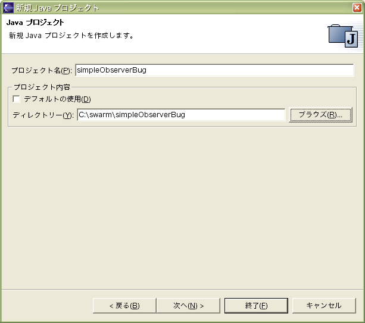
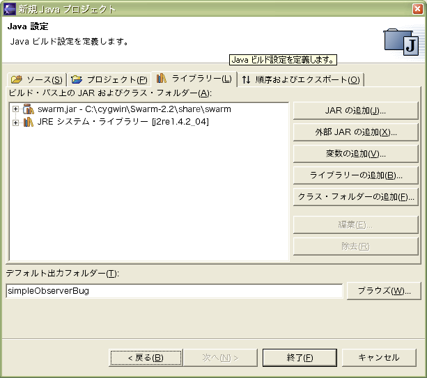

テキストエディタがあればSwarmの開発をすることはできる。しかしながら、統合開発環境にはフィールド名・メソッド名の補完機能など便利な機能が多い。そのため、ここで統合開発環境の使い方を簡単に説明する。ここではeclipseを用いるが、eclipseについての詳細はeclipse.orgほかの情報源にあたってほしい。
外部jarとしてswarm.jarを登録すれば、Eclipseでコードを編集できるようになる。
新規→プロジェクト→Javaプロジェクトでプロジェクトを作成する（プロジェクト内容ではソースがあるフォルダを指定する）

その際、ライブラリー・タブ→外部JARの追加→C:\cygwin\Swarm-2.2\share\swarm\swarm.jarとする

以上で次のような統合開発環境を使えるようになる（クリックで拡大）
シェルからgcjswarmで行っていたコンパイル作業は、ビルド・ツールAntで次のようなビルドファイルbuild.xml（Makefileに相当する）を用いればEclipse上から行うことができる（現時点で筆者の環境ではEclipse上でデバッグなどができないため、コンパイルだけできることの実用性は不明だが）。ビルドファイルの書き方は「Apache Ant ユーザマニュアル」を参照してほしい
<?xml version='1.0' encoding='Windows-31J'?>
<project name="simpleObserverBug" default="compile" basedir=".">
<target name="compile">
<exec executable="bash" >
<arg line="c:\cygwin\Swarm-2.2\bin\gcjswarm simpleObserverBug.java" />
</exec>
</target>
<target name="clean">
<delete>
<fileset dir="." includes="*.class"/>
<fileset dir="." includes="*.exe"/>
</delete>
</target>
</project>
パッケージ・エクスプローラ上でbuild.xmlを右クリックし、「Antの実行」を選択すればよい
{kind=link}